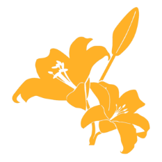
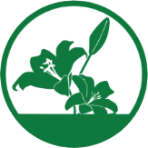

こんにちは、メインステージ班です。
今回のプロジェクトでは初めての取り組みとして、
全国のキャンパスがMIXされた状態で班活動が行われました。
また、取り扱うテーマが「伝統芸能」という非常に難しい内容、かつ、皆が皆初めましての状況で、
本プロジェクトの進行は困難を極めました。
しかし今、こうしてWebサイトがあり、生放送が企画され、アーカイブが完成しています。
何も知らない「０」からの我々の行動の軌跡、興味ありませんか？

よかったら生放送も見にきてください^^
今回のプロジェクトは、
「実行委員会」「広告制作班」「Web制作班」「演劇班」「演芸班」「音楽班」「メインステージ班」
この7つの班に分かれて活動していました。
各班に本プロジェクトでのあれこれを聞いてきましたので、
ぜひ最後までみていってください。
実行委員会
全体的な統括が主な仕事です。
具体的には各班のタスクと進捗を把握し、適切な指示を出す、といったことをしています。
役割分担について
4人の実行委員がどの班を受け持つかを事前に決め、分担しました。
実行委員の仕事は全体のサポートと言いましたが、
実行委員内でも忙しいところや、進みが遅い班に手が空いた人が手伝いに行く、という助け合いが盛んでした
私たちのテーマ、「古今融合」について心がけたこと
古今融合の、「古」に偏りすぎないように呼び掛けていたつもりです。
今と融合させる案を考えてほしい！と呼びかけた結果、各班が本当に良い企画を持ってきてくれました
自分の班の自慢できること
実は今回自分たちがアイディアを出したのが全体のテーマ「古今融合」のみなんですよね。
もし皆さんが気に入っていただけていたならば幸いです。
予想外の出来事、それの対処
2つあります。
1つ目はメインステージ班と演芸班のオファーを断られてしまったことです。
全体の進捗管理も仕事なので、実行委員で集まって今後の対策を会議したり、代案を考えて提案してみたりもしました。
2つ目は資金管理です。
ゲストを呼ぶにはもちろんお金がかかりますが、どれくらいお金がかかるかなんて誰も知らない状態から始まりました。
また、各班からの希望金額が予算をオーバーしており、
うまく予算内に収まるように調整してもらったりもしました。
広告制作班
Webサイトと生放送にきてもらえる、魅力的な広告の作成が主な仕事です。
広告を出すにはターゲットや、関連キーワード、配信日時など
設定することが意外と多く、驚いた記憶があります。
また、Webサイトに誘導する文章をどうするか、など真剣に話し合いました。
役割分担について
実行委員2人、音楽班1人の計三人で動きました。
分担という分担は特になく、1人がアイディアを出すと他2人がそれを補修して昇華させる、
このループを回していました。
アイディアに困ることもなく、最終決定までとてもスムーズに進めることができました。
私たちのテーマ、「古今融合」について心がけたこと
特に広告文には気を使いました。
演劇班が作成した漫画を用いた広告だったので、一度演劇班にこの広告文でいいか、
と確認してから先生方にも確認するというダブルチェックを行いました。
自分の班の自慢できること
強いていうならば、
演劇班の漫画を利用して続きを読みたいなら…という誘導の流れを作れたことですかね。
これも演劇班あってのことなので、演劇班の皆様には頭が上がりません。
本当にありがたい。
予想外の出来事、それの対処
広告効果の集計期間を見誤っていたことです。
早めに指摘していただいたのでなんとかなりましたが、心の底からヒヤリとしました。
集計される期間全てに広告を流せるように変更できたのは本当によかったと思います。
Web制作班
サイトの構成やデザイン、色合いを決めました。また、各ページに載せる内容をまとめたりしました。
役割分担について
“動き”を作るプログラマー、全体の構成や色合いを決めるデザイナー、それらをまとめるディレクター
この3役に分け、各自自分が得意な役につきました。
最初から役割がはっきりしている方が来てくれていたので、
スムーズに分担することができました。
私たちのテーマ、「古今融合」について心がけたこと
色合いやフォントなど、視覚で古そうなものだと思われないように、
伝統っぽいデザインでありながらお洒落な物になるように作りました。
例えば、模様は伝統の幾何学模様にして、色合いで新しい・綺麗、というイメージになるようにしました。
自分の班の自慢できること
サイト全体のデザインです。
デザイナーの方が都合が合わず、なかなか細かく話し合いができずにいました。
そんな中でもみんなで話し合いをして、いろんな方に手伝ってもらいながら決めたデザインなので、
思い入れもありますし、自慢できる物になっています。
協力してくれたみなさん、ありがとう！
予想外の出来事、それの対処
上記にも書いたように、デザイナーの方となかなか話し合いができなかったことですね。
その方が来れていない間は居るみんなで話し合い、来た時に迅速に進められるようにやりました。
こっちは私(リーダー)が提案した物なのでweb班全体が、というより他のみんなが予想外だった物になりますが、
サイトのデザインをゴロッと変えたことです。それも残り作業回数3回になって。
いや〜本当に申し訳なかった(((
しかし、いきなりの提案だったのにもかかわらず快く承諾してもらえ、いいものを完成させることができました。
感謝……！！！
演劇班
まず企画立案をし、歌舞伎についての基礎知識や役立つ情報を学ぶことができる漫画を作ることに決定しました。
企画決定後は、ファッションイラストと漫画の作成、コーディネート考案、イラストの作成、
漫画ストーリー用の資料作成、漫画ストーリーの原稿作成、漫画ラフの作成、漫画の清書作成、
Web・ロゴデザインを行いました。
役割分担について
企画立案をグループ全員で考えた後、
イラストを作成する人、セリフを考える人、資料を作成する人、の3つに分かれて作業しました。
コーディネート考案やweb・ロゴデザインなど、個人が担当する作業もありました。
私たちのテーマ、「古今融合」について心がけたこと
歌舞伎が「古」、ファッションイラストと漫画が「今」という二つを掛け合わせて、
現代で使える歌舞伎風のファッションやメイクを考え、
若者に興味を持ってもらえるように心がけました。
自分の班の自慢できること
漫画のクオリティーは自慢できると思います。
漫画を通して楽しく歌舞伎について学べると思います。
また、イラストも実際にあるブランドの服からコーディネートを考えて作成したので自慢できると思います。
予想外の出来事、それの対処
Zoomでの話し合いが難しいと思いました。
リーダーを中心に進めることで乗り越えることが出来たと思います。
また、漫画のストーリー原稿が7000字を超えてしまい、
漫画のページ数が60ページを超えそうになったことも大変だったと思います。
文章を削って、なんとか20ページに収めることが出来ました。
演芸班
落語家の桂枝之進さんにインタビューをして、その内容を文字起こしして記事に編集しました。
役割分担について
45分もの長尺インタビューでした。
なので文字起こしは、質問の内容ごとに4つのセクションに分けて作業しました。
私たちのテーマ、「古今融合」について心がけたこと
当初は閲覧者との双方向性を考慮して、
落語家さんを「古」閲覧者を「今」としてそれを繋ぐための
プラットフォームとしてwebページを用意する予定でした。
それを古今融合をテーマに活動していらっしゃる落語家さんへのインタビュー記事という形で表現しました。
自分の班の自慢できること
Webに載せる文章を対談型にすることで、閲覧者との双方向性を考慮しました。
また企画が上手くいかなかった時のためにサブプランを2,3用意していました。
予想外の出来事、それの対処
プロジェクト期間の中盤あたりで当初予定していた企画が予算内では厳しいということが発覚しました。
なのでサブプランとして用意していた企画に変更しました。
当初予定していた企画とは大幅に方針転換をしました。
音楽班
元の雅楽器・バイオリン・ピアノ等が組み合わさった音源をそれぞれのパートで分割した音源にしました。
そこから各パートごとにピッチ・タイミング補正、また音量・音圧の調整、マスタリングをし、
最終的に全体を組み合わせたMIX後の音源の提出をしました。
役割分担について
MIXなど音楽に関する主な部分は、自身が現在活動していることもあり、担うことになりました。
私たちのテーマ、「古今融合」について心がけたこと
世間的に「古」のイメージである伝統音楽の雅楽、
そして「今」多くの人を魅了している現代的アーティストの融合を趣旨とし、
企画制作に臨んできました。
自分の班の自慢できること
今ある伝統音楽の魅力をより鮮明に伝えるといった訳ではなく、
今の伝統音楽をこの現代においてのリニューアルということを目指し、
古今融合を成し遂げた新しい企画に注目して頂ければ嬉しいです。
予想外の出来事、それの対処
とにかく期日への企画制作の計画が難しかったです。
全体的に遅れ気味になっていた挙句、計画通りにいくと思っていたものが予想と反し、
さらに遅れてしまうといった事態にも遭遇しました。
その時にスキル的にも人間的にもとても頼りになるチームメンバーがいてくれたおかげで本当に助かりました。
協力すれば労働も時間もとても短縮できることを実感しました。

メインステージ(舞台)班
主に生放送の運営・アーカイブ記事の作成をしました。
生放送では企画立案・タイムテーブル作成においてどのようにすれば伝統芸能の魅力が伝わるのか考えました。
役割分担について
始めはグループ全員で、生放送の企画を最優先に取り組みました。
その後はゲスト依頼書の作成・アーカイブ記事の作成などをグループを2つに分けて行いました。
実行委員にも作業を協力していただきました。
私たちのテーマ、「古今融合」について心がけたこと
テーマの実現には閲覧者に興味を持ってもらい、
伝統芸能に親しんでもらえるには、どのような「今」の企画を行うかが重要だと考えました。
なので閲覧者が親しみのあるであろう企画にしました。
自分の班の自慢できること
生放送の企画の「伝統芸能クイズ」です。
一方的に発信するのではなく、視聴者参加型で企画をすることで視聴者にも古琴融合を感じて頂けます。
予想外の出来事、それの対処
始めはイラストコンテストを行う予定でした。
しかしイラスト募集の許可がおりない、講評者が決まらないという問題が起こり
企画が成立しなくなりました。
なので急遽、企画を1から立て直しました。
次の日記はプロジェクト実施期間の毎週水曜日に行われた各班のチームリーダーからの
報告や相談事項を共有する「全体共有会」の内容をまとめたものとなっています。
各班の進捗状況や週毎の進み具合がわかるものになっているので、
ぜひ見てみてください。